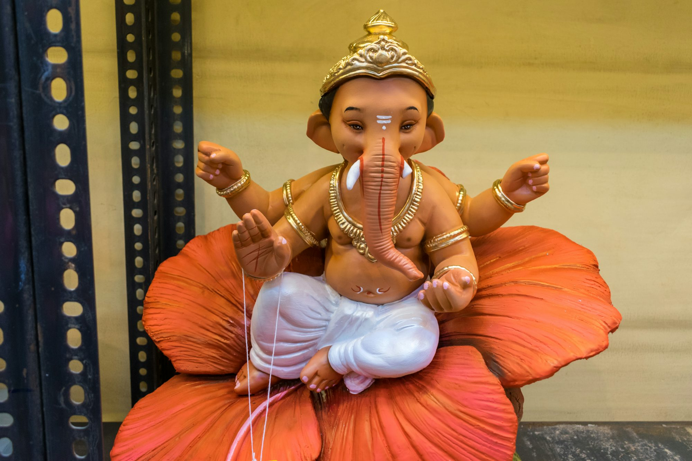

The Art of Celebration: Exploring Festivals Worldwide
A comprehensive look at various festivals across the globe, highlighting their cultural significance, activities, and community spirit.Music Festivals: A Symphony of Cultures
Music festivals are a cornerstone of modern cultural celebration, attracting music lovers from all walks of life. Events like Coachella, Glastonbury, and Tomorrowland transform fields into lively hubs of creativity and expression. These festivals showcase an array of musical genres, providing a platform for both established and emerging artists to share their talents. The energy at these events is palpable, as attendees dance, sing, and connect through the universal language of music.
One of the most exciting aspects of music festivals is the sense of community they foster. People gather not just to enjoy performances, but to forge friendships and create memories together. The experience of sharing a favorite artist or discovering new sounds enhances the festival atmosphere. Each performance serves as a reminder of the power of music to unite individuals, transcending geographical and cultural boundaries. Music festivals are more than just concerts; they are celebrations of life, creativity, and togetherness.
Cultural Festivals: Celebrating Heritage
Cultural festivals offer a rich tapestry of traditions, showcasing the unique customs and values of different communities. Events like Diwali, Chinese New Year, and Oktoberfest highlight the vibrancy of cultural identities through colorful displays, traditional performances, and authentic cuisine. These festivals invite participation from everyone, creating a sense of belonging and unity.
For instance, Diwali, the festival of lights, brings families together to celebrate with lamps, sweets, and fireworks, symbolizing the triumph of light over darkness. Similarly, the Chinese New Year is marked by family gatherings, dragon dances, and elaborate feasts that signify prosperity and renewal. Cultural festivals allow individuals to immerse themselves in the richness of heritage while promoting understanding and appreciation of diverse traditions. They serve as a reminder of the beauty of diversity and the importance of preserving cultural legacies.
Religious Festivals: Spiritual Celebrations
Religious festivals hold deep significance for many, offering opportunities for spiritual reflection and communal bonding. Celebrations such as Christmas, Eid al-Fitr, and Hanukkah highlight the values of faith, gratitude, and generosity. These occasions provide moments for individuals to come together in celebration of shared beliefs, fostering a sense of community and support.
During Christmas, families and communities engage in festive traditions, decorating trees, exchanging gifts, and sharing meals that emphasize love and togetherness. Eid al-Fitr marks the end of Ramadan, and is celebrated with communal prayers, feasting, and acts of charity, reinforcing the spirit of unity among Muslims. These religious festivals are not only moments of personal reflection but also opportunities to strengthen community ties and celebrate shared values that transcend individual differences.
Film Festivals: A Showcase of Creativity
Film festivals, such as the Cannes Film Festival and the Sundance Film Festival, serve as important platforms for filmmakers and storytellers. These events celebrate the art of cinema, allowing filmmakers to present their work to a global audience and engage in discussions about the power of storytelling. The excitement surrounding premieres and award ceremonies creates a dynamic atmosphere that fosters creativity and innovation.
Attendees at film festivals have the opportunity to explore a wide range of cinematic experiences, from independent films to blockbuster premieres. These events promote diverse voices and narratives, encouraging conversations about culture, identity, and societal issues. Film festivals not only highlight the artistic talent of filmmakers but also provide a space for audiences to engage with thought-provoking stories that challenge perceptions and inspire dialogue.
Food and Drink Festivals: A Culinary Journey
Food and drink festivals celebrate the culinary arts, inviting attendees to explore a world of flavors and traditions. Events like the Taste of Chicago and various wine festivals showcase the talents of chefs, artisans, and local producers, emphasizing the importance of community and sustainability in gastronomy. These festivals are a feast for the senses, offering a delightful array of dishes that reflect local cultures and ingredients.
Visitors can sample a wide range of culinary delights, from street food to gourmet offerings, while engaging with chefs and learning about their culinary philosophies. Cooking demonstrations and workshops provide opportunities for attendees to develop their skills and appreciation for the culinary arts. Food festivals foster connections among participants, celebrating the joy of sharing meals and the stories behind each dish, ultimately highlighting the role of food as a connector in our lives.
Arts and Crafts Festivals: Celebrating Creativity
Arts and crafts festivals provide a platform for artists and artisans to showcase their work, emphasizing the importance of creativity in our daily lives. Events such as Art Basel and local craft fairs allow attendees to engage with visual arts and handmade goods, celebrating the talents of creators while encouraging a deeper appreciation for the artistic process. These festivals foster connections between artists and audiences, inspiring creativity and collaboration.
At arts festivals, visitors can discover a diverse range of artistic expressions, from paintings and sculptures to textiles and ceramics. Many festivals include hands-on workshops and demonstrations, encouraging attendees to explore their own creativity and learn new skills. Supporting local artisans not only enriches the community but also promotes the preservation of traditional craftsmanship, ensuring that the artistic spirit continues to thrive.
Seasonal and Harvest Festivals: A Celebration of Nature
Seasonal and harvest festivals celebrate the rhythms of nature and the abundance it provides. Events like cherry blossom festivals and autumn harvest celebrations invite communities to come together and appreciate the beauty of the natural world. These festivals often feature local produce, crafts, and cultural performances that reflect the spirit of the season, fostering a connection between people and nature.
Participating in seasonal celebrations allows individuals to engage with the environment and cultivate a greater appreciation for the cycles of nature. Activities such as flower viewing, apple picking, and participating in traditional dances create memorable experiences that honor the earth's bounty and beauty. Harvest festivals, in particular, serve as a reminder of the importance of sustainability and the joy that comes from celebrating the natural world around us.
Literary Festivals: The Love of Words
Literary festivals gather authors, poets, and literature enthusiasts for a celebration of storytelling and the written word. Events like the Hay Festival and the Edinburgh International Book Festival provide platforms for readings, discussions, and workshops that inspire creativity and foster a love for literature. These festivals create an engaging atmosphere filled with intellectual curiosity and the shared passion for books and storytelling.
Attendees have the chance to interact with authors, explore new ideas, and connect with fellow book lovers. Through discussions about themes, genres, and the impact of literature on society, literary festivals emphasize the transformative power of storytelling to shape our understanding of the world and encourage dialogue among diverse perspectives. These gatherings celebrate the importance of literature in our lives and the connections it fosters between people.
Fashion Festivals: Celebrating Style and Innovation
Fashion festivals, such as New York Fashion Week and Milan Fashion Week, highlight creativity and innovation in the fashion industry. These events showcase the latest trends and the artistry of designers, providing a platform for self-expression and individuality. Attending a fashion festival is an immersive experience where attendees can witness the craftsmanship and creativity behind each collection.
The excitement surrounding runway shows and the opportunity to engage with fashion enthusiasts create an atmosphere that celebrates style and artistic vision. Fashion festivals also promote discussions about sustainability and inclusivity, encouraging a more mindful approach to fashion and its impact on society. By showcasing diverse designers and perspectives, these events enrich the fashion landscape and inspire new ideas.
Adventure and Outdoor Festivals: Embracing the Great Outdoors
Adventure and outdoor festivals focus on activities that connect individuals with nature and promote physical pursuits. Events like outdoor adventure festivals and sporting events encourage exploration and camaraderie among participants. These festivals often feature activities such as hiking, rock climbing, and water sports, inviting individuals of all skill levels to engage with the natural world.
The emphasis on adventure fosters a spirit of community and encourages participants to step outside their comfort zones. These gatherings create opportunities for individuals to connect with nature, discover new passions, and forge friendships that extend beyond the festival experience. Outdoor festivals remind us of the joy of embracing the great outdoors and the shared experiences that come with it.
Conclusion
Festivals are a celebration of life, culture, and community, offering a rich tapestry of experiences that unite people across the globe. From music and food to art and literature, each festival provides a unique opportunity to explore and appreciate the beauty of human expression. Engaging in these celebrations deepens our understanding of one another and highlights the importance of connection, creativity, and joy in our shared humanity.